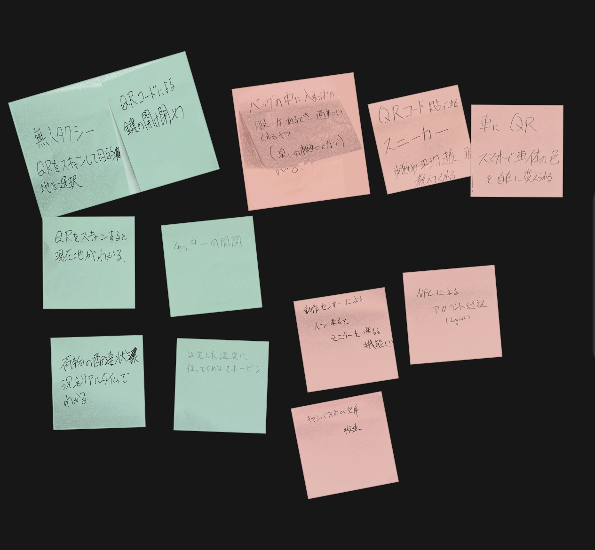
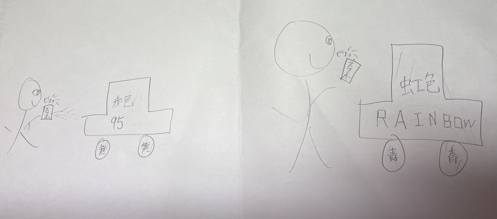

IoTとは何か
IoTとは、モノをインターネットに接続して、遠隔操作をしたり、
情報のやり取りを出来るようにする技術のこと。自転車や、家電、カメラなど、
様々なもので利用されている。
例えば
スマホからエアコンのon,ofだったり、
自転車の鍵をアプリでロック、アンロック出来たり、
]
街にあるレンタル自転車をアプリで予約や返却出来る。
IoTで何が出来そうか グループの意見

自分のアイデア：カラーチェンジ可能の車

スマホで気分に合わせてカラーを変更出来たり、友達の端末を
登録しておいて、近づくと専用カラーに変わったり出来る車。
車に限らず、色んなモノをIoTを駆使してスマホでデザインチェンジ可能に。
IoT実験動画
YouTube埋め込みテスト